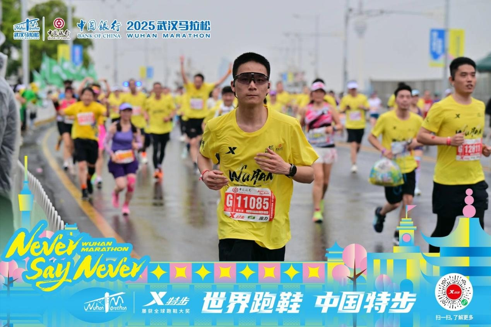
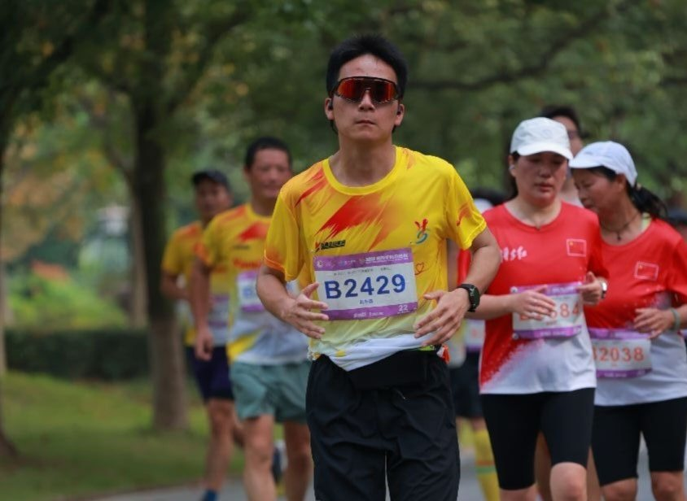
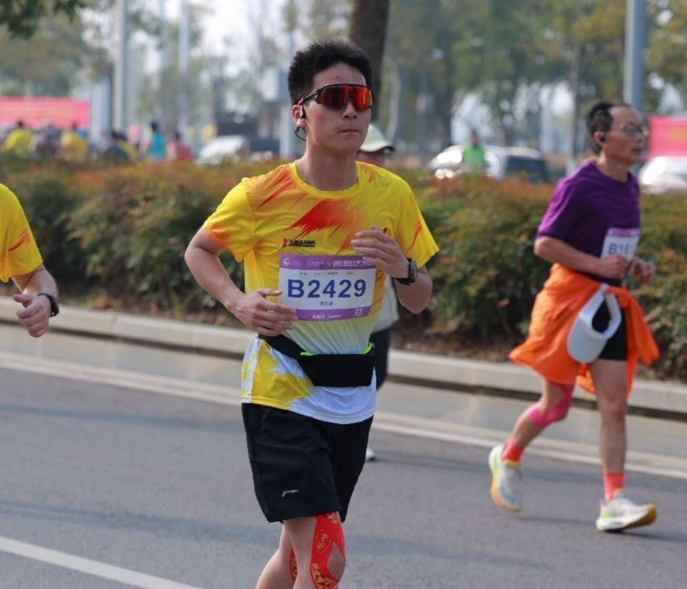
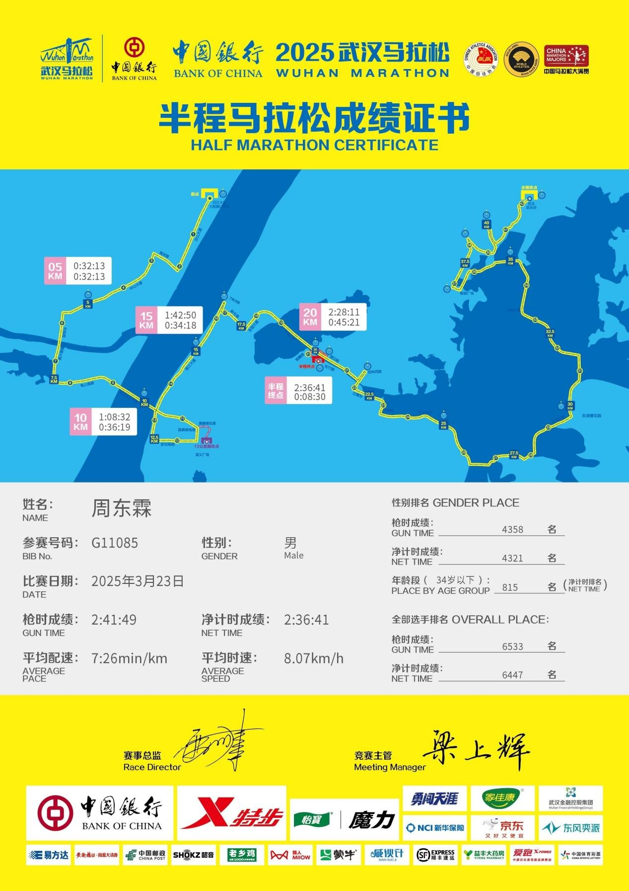
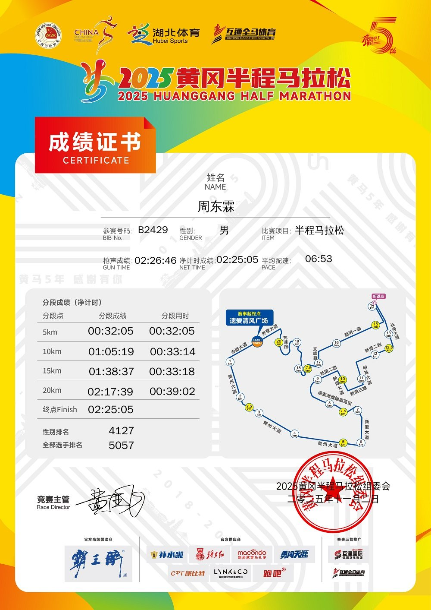

兴趣爱好
音乐滋养心灵，运动锤炼意志——热爱让生活更有温度
音乐
5 岁开始学习音乐，钢琴最为擅长，参加多项高水平钢琴赛事并获奖
现为虫虫钢琴平台认证音乐人，拥有一首原创钢琴曲《你好，未来》
亦擅长声乐、吉他、口琴，用多元的音乐形式表达生活的感悟
原创钢琴曲《你好，未来》 — 前往聆听
马拉松
热爱马拉松、乒乓球、跆拳道等运动，在奔跑中挑战自我
2024 年起参赛，已完赛两场中国田径协会认定的 A1 类赛事，包括中国马拉松大满贯、十大城市马拉松之一的"武汉马拉松"

2025年3月武汉马拉松现场

2025年11月黄冈半程马拉松现场

2025年11月黄冈半程马拉松现场

2025年武汉马拉松完赛证书

2025年黄冈马拉松完赛证书